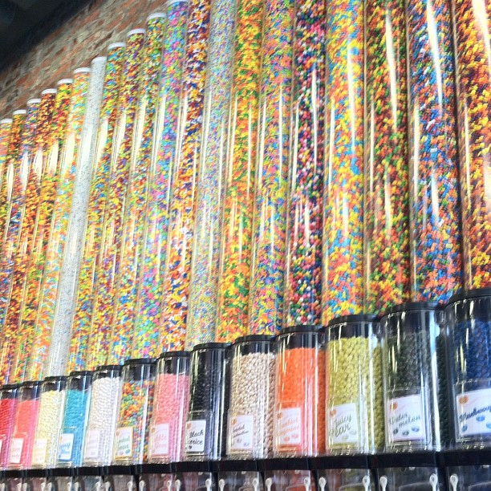

The only way to get rid of temptation is to yield to it. - Oscar Wilde
Frankfurt, Germany, Late 2036.
You read the note several times; Oeder Weg 15, this is it.
But it can’t be…
The geniuses who hacked into Abstergo Industries’s most secure system, hiding in a candy store?
You don’t believe it.
Something’s off.
Louis XIV is a group of three; best thieves from Europe. They steal jewelry and art, and always leave a dark purple “Louis XIV” rose at the scene. But they seldom do cutting-edge technology. Their M.O., if you will, is classical. Old-fashioned.
After Abstergo’s Head of IT Security realized they were hacked, it took them half a month to figure out who the hackers were, and another half for Tyrell Wellick, the CTO to realize that his most prized collection of Raphael had been replaced by almost-real forgeries. The signature purple rose was left in Tyrell’s private safe in his office, which he never thought to use. Apparently, Louis XIV is pretty versatile. They are not just world-class thieves and top-notch hackers, but also master art forgers.
Maestros. You picture a Leonardo-like virtuoso with a mysterious smile.
Abstergo eventually sent out a squad to track Louis XIV down. You are one of them. It was almost too easy, as if Louis XIV had wanted to be found.
So there you stand, about to meet the best villains who cost your employee millions face-to-face.
You walk into the candy store called “Honeydukes”; you can feel the gun in your suit’s inner pocket.
A lean, comely boy with dark hair, no more than 20 years old, is sitting on the counter, leg crossed, licking a lollipop.
“How can I help you?” His English has a slight but pleasant German accent.
The boy has innocent blue eyes, which strangely make you feel uneasy. This is not the person I’m looking for. Too young.
But you decide to give a try anyway. Who knows, the brat might know something.
“Here, have a candy. Let me know if you need anything.” The boy tosses you an orange starburst. That’s your favorite flavor, so you gladly unwrap it.
It smells like real, fresh oranges. But you are not so dumb as to be tempted; you pretend to have eaten it but instead carefully put it in your pocket when the boy is not looking.
“I’m just browsing. This place looks interesting. You are here all alone?” You ask.
“Nah. My brother works upstairs, but he doesn’t come down often. He likes computers, programming and stuff, you know. He says he’s writing a virtual reality game.” Says the boy, unwrapping another starburst for himself.
You are surprised how easy this has been. You take a deep breath and smile at the boy.
“Cool. Nice to meet you. ” You tell him your name, “What’s your name?”
“Welkin.” He casually shakes your hand, “Do you like the starburst?”
“Yeah, it’s great. Thanks. Can I see what your brother is doing? What you just said sounds fun. I’m a software engineer myself, you know.”
“Sure. He won’t mind. I bet he’d love to talk to another tech guy. That door over there leads to the first floor. Just tell him you are my friend. Oh his name is Cygnus.”
You thank him and walk over to open the door.
Seeing what’s inside, you are absolutely stunned.
The missing paintings of Raphael, including Tyrell’s all-time favorite “Bridgewater Madonna”. Vermeer’s long-wanted The Concert. Monet’s perfectly ethereal rendering of London’s Waterloo Bridge. Even one of the eight Imperial Faberge Eggs, Royal Danish.
For a heart beat you forget why you are here. When you lay your eyes on the Heart of the Ocean, you hear a lazy voice say, “You are just like the others before you.”
You turn around to look at Welkin, utterly confused.
“Don’t you remember how you got here?” Welkin blinks at you.
All of a sudden you have a bad feeling about this.
“I… my flight from San Francisco… Wait… I don’t remember… but how…?”
“The last thing you did in the real world was googling Louis XIV. Bad, bad choice, Kumpel.” Welkin smiled gently, his clear blue eyes looking mischievous.
“What the hell are you talking about?” You reach for your gun.
“Google directed you to Honeyduke’s page and you started to read the short story under the ‘Candy’ tab. Remember that story?”
“It’s a first person story… The guy’s in Frankfurt, trying to find a bunch of thieves… wait a minute, what the…?!”
“Our latest app, ‘Candy’. Cygnus and I wrote it. It’s embedded in our website. When you were reading that story in your browser, Candy started to digitalize your physical body until you became part of the website’s source code. Everything you see right now is in Candy’s virtual reality, including me. But for you to truly become part of our code, you need to accept Candy’s terms.”
You point your gun at him, “Ha, I never agreed to any terms! You tried to trick me with that starburst, I knew it! So I didn’t swallow it. You’ll never make me part of your program.”
“The starburst is just a candy, Kumpel.” Welkin rolls his eyes, “You checked out that picture of candy dispensers when you started to read, didn’t you?”